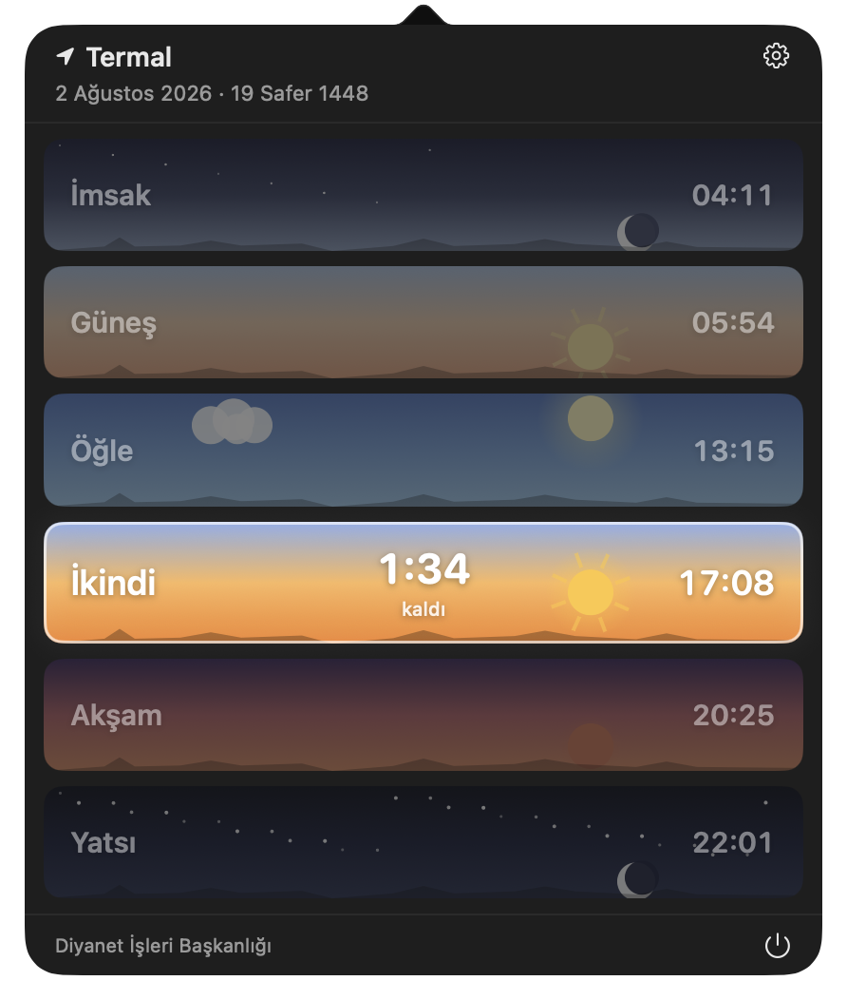
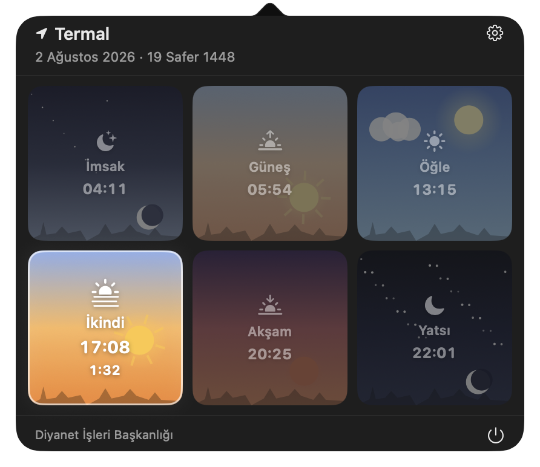
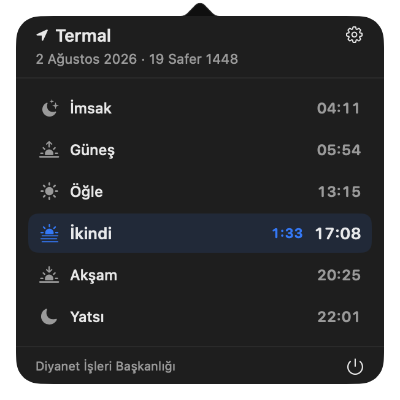
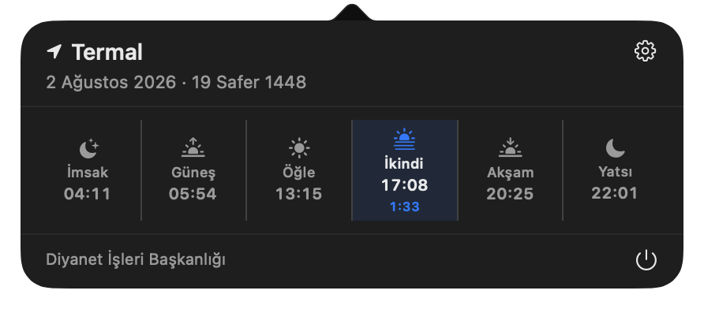

Vaktinizi bilin.
İçinde bulunduğunuz namaz vaktini ve bitmesine kalan süreyi menü çubuğunuzdan takip edin.
Mac’iniz için küçük bir günlük yardımcı
Prayer Times ile namaz vakitleri, canlı geri sayım ve hatırlatmalar
Mac’inizin menü çubuğunda. Bir bakış kadar yakın.
macOS 14+ · Intel & Apple Silicon · Açık kaynak
Bir tık.
Bütün vakitler.

GERÇEK UYGULAMA EKRAN GÖRÜNTÜSÜGünlük hayatınıza uyum sağlar.
TAM ZAMANINDA, TAM YERİNDE
İşinize, gününüze, hayatınıza devam edin.
Vakitleri takip etmek artık daha kolay.
İçinde bulunduğunuz namaz vaktini ve bitmesine kalan süreyi menü çubuğunuzdan takip edin.
Her vakit için ayrı bildirimler. Tam vaktinde veya 5–60 dakika öncesinde.
Otomatik konum algılama veya elle ülke, il ve ilçe seçimi. Tercih sizin.
İndirilen aylık vakitler Mac’inizde saklanır. Önbellekteki günler için bağlantı gerekmez.
SİZİN MAC’İNİZ. SİZİN GÖRÜNÜMÜNÜZ.
Gökyüzünün renkleri veya yalnızca ihtiyacınız olan bilgi.
Size en uygun görünümü seçin.



KENDİ DİLİNİZDE
Sistem dilinizi izler, isterseniz Ayarlar’dan değişir. Arapça, Farsça ve Urduca için sağdan sola arayüz desteğiyle.
Sık sorulan sorular
Evet. Prayer Times, macOS 14 Sonoma ve üzeri için geliştirilmiş bir namaz vakti uygulamasıdır. Menü çubuğunda mevcut vakti ve bitmesine kalan süreyi gösterir; Diyanet verilerini kullanır.
Prayer Times’ın son sürümü GitHub Releases sayfasından indirilebilir. Kaynak kodu ve derleme yönergeleri aynı GitHub deposunda bulunur.
Vakitler, Diyanet İşleri Başkanlığı’nın yayımladığı resmî vakitleri sunan Ezan Vakti İmsakiyem API üzerinden alınır. Prayer Times bağımsız bir uygulamadır; Diyanet’in resmî uygulaması değildir.
Önceden indirilen bir aylık vakitler Mac’inizde saklanır. Önbellekte bulunan tarihler için internet olmadan çalışır; yeni vakitleri indirmek için bağlantı gerekir.
Türkçe ve İngilizce dahil 14 dili destekler. Arapça, Farsça ve Urduca için sağdan sola arayüz desteği vardır.
Namaz vakitleri gününüzün doğal bir parçası olsun.
Mac için indirmacOS 14+ · Intel ve Apple Silicon
# Terminal’e yapıştırın
brew install --cask lutfullahkabalak/tap/prayer-timesKomutu tek satırda çalıştırın.
Homebrew deposunu incele ↗